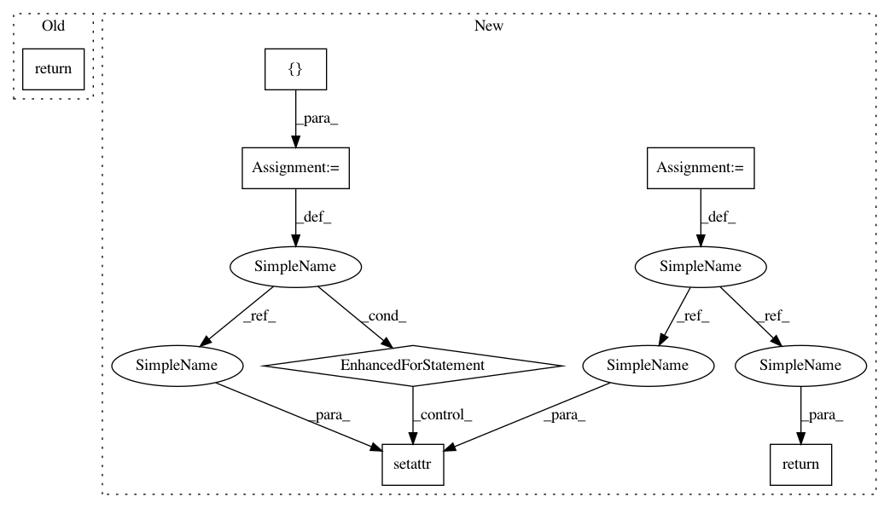

55ac7e53aea82d221b0919576199d1ef3d627f6d,torch/quantization/quantize_fx.py,,_convert_fx,#Any#Any#Any#Any#,404
Before Change
_check_is_graph_module(graph_module)
quantizer = Quantizer()
return quantizer.convert(graph_module, debug, convert_custom_config_dict, is_standalone_module)
def convert_fx(
graph_module: GraphModule, debug: bool = False,
convert_custom_config_dict: Dict[str, Any] = None) -> GraphModule:
After Change
_check_is_graph_module(graph_module)
quantizer = Quantizer()
quantized = quantizer.convert(graph_module, debug, convert_custom_config_dict, is_standalone_module)
preserved_attributes = convert_custom_config_dict.get("preserved_attributes", [])
for attr_name in preserved_attributes:
setattr(quantized, attr_name, getattr(graph_module, attr_name))
return quantized
def convert_fx(
graph_module: GraphModule, debug: bool = False,
convert_custom_config_dict: Dict[str, Any] = None) -> GraphModule:
In pattern: SUPERPATTERN
Frequency: 3
Non-data size: 7
Instances
Project Name: pytorch/pytorch
Commit Name: 55ac7e53aea82d221b0919576199d1ef3d627f6d
Time: 2021-01-11
Author: jerryzh@fb.com
File Name: torch/quantization/quantize_fx.py
Class Name:
Method Name: _convert_fx
Project Name: pytorch/pytorch
Commit Name: 55ac7e53aea82d221b0919576199d1ef3d627f6d
Time: 2021-01-11
Author: jerryzh@fb.com
File Name: torch/quantization/quantize_fx.py
Class Name:
Method Name: _convert_fx
Project Name: IDSIA/sacred
Commit Name: 28625b4a14071722be3944e4e2c949d4ded28970
Time: 2017-01-14
Author: qwlouse@gmail.com
File Name: sacred/observers/slack.py
Class Name: SlackObserver
Method Name: from_config
Project Name: pytorch/pytorch
Commit Name: 55ac7e53aea82d221b0919576199d1ef3d627f6d
Time: 2021-01-11
Author: jerryzh@fb.com
File Name: torch/quantization/quantize_fx.py
Class Name:
Method Name: _prepare_fx